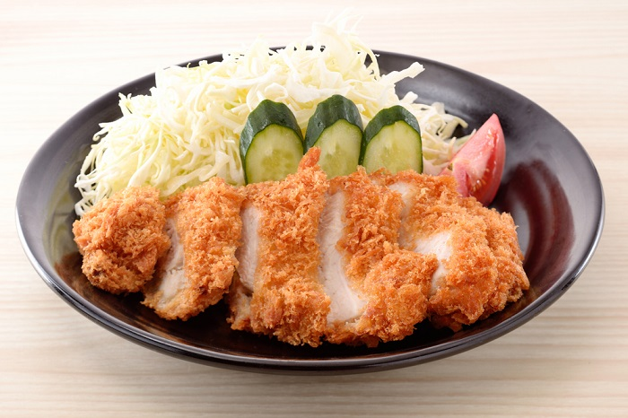

Back to Homepage
Chicken Katsu

Description
Chicken katsu (chicken cutlet (Japanese: チキンカツ, Hepburn: chikinkatsu)), also known as panko chicken, or tori katsu (torikatsu (鶏カツ)) is a Japanese dish of fried chicken made with panko bread crumbs which is also popular in Italy, Hawaii, London, California, and other areas of the world.
Ingredients
- 4 skinless, boneless chicken breast halves - pounded to 1/2 inch thickness
- salt and pepper to taste
- 2 tablespoons all-purpose flour
- 1 egg, beaten
- 1 cup panko bread crumbs
- 1 cup oil for frying, or as needed
Steps
- Season chicken breasts on both sides with salt and pepper.
- Place flour, beaten egg, and panko crumbs into separate shallow dishes.
- Coat chicken breasts in flour, shaking off any excess; dip into egg, and then press into panko crumbs until well coated on both sides.
- Heat oil in a large skillet over medium-high heat.
- Place chicken in the hot oil, and fry until golden brown, 3 or 4 minutes per side.
- Transfer to a paper towel-lined plate to drain.